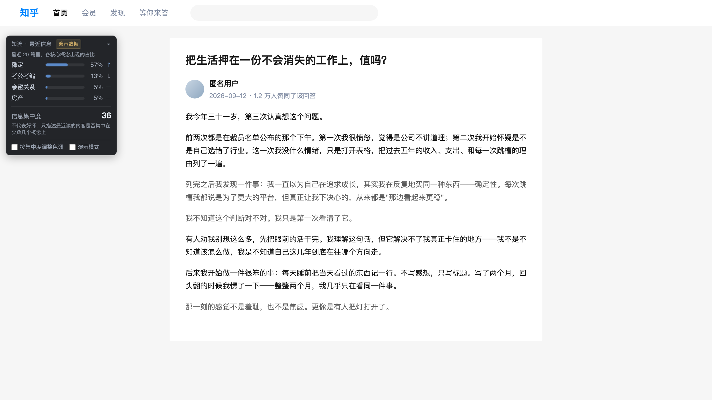

知流是一个嵌在知乎阅读场景里的信息流仪表盘。你照常刷知乎， 它把你真正读完的内容理解成一到三个核心概念，在本地累计成最近的主题分布、 趋势和信息集中度。它不改变你的推荐，只让你看见自己接触了什么。
面板长这样。上面的数字是演示语料跑完整条链路后的真实输出 —— 所以它自己挂着「演示数据」标记。真实阅读时那里会写「AI 分析」。
没有需要维护的清单，没有要打的标签，也没有"今天记录一下"的仪式。 知流只在你真正停留读完一篇回答或文章时才记一笔 —— 划过去的不算。
面板放在阅读列左边量出来的空白里。窗口变窄时它自己收成一个胶囊， 不会压到正文 —— 这条是拿真实知乎页面量过的。

下面是演示剧本里 26 篇的真实轨迹。前 9 篇样本不够，不出分； 之后随着内容越来越集中在同一个主题上，集中度从 10 一路走到 36。
它不说这件事是好是坏。它只是把"我最近好像一直在看同一类东西"这个模糊的感觉， 变成一个你能看见的数。
一篇讲"我把跳槽的念头压下去的第三年"的回答，通篇可能一次"稳定"都没出现。 按词频它会被归到别处；按它在追问什么，它就是关于稳定。
你的阅读历史、主题分布、趋势和集中度都存在浏览器本地，从不上传。 服务端每次只收到当前这一篇的标题和正文，外加一个公开内容 ID —— 请求体是白名单强制的，多一个字段直接拒绝。
我们不宣称"服务器技术上绝对无法关联请求"。逐篇请求终究会到达服务端， 同一来源的请求序列在网络层理论上仍可被重建 —— 代码层面阻止不了这件事， 所以这里不做那个承诺。
知流还没上架 Chrome 应用商店，所以是开发者模式安装 —— 四步，不到一分钟。 扩展包从这里下载：下面四步。
zhiliu-production.zip 并解压87 KBchrome://extensions，右上角开启「开发者模式」一次性/question/…/answer/…）或专栏文章，读够 8 秒面板出现
包里有两个版本。zhiliu-production.zip
连着公网分析服务，面板显示「AI 分析」；
zhiliu-demo.zip 不连任何服务，走本地预置数据，
面板会明确挂上「演示数据」标记 —— 那个标记是故意留着的，不要把它当成实时分析。
没有被真人验证过的页面类型，知流不抽取、不分析、也不入库 —— 宁可什么都不显示，也不显示一个可能是错的。
最容易被误会的是问题页：/question/<qid> 这一页上同时挂着
很多个回答，没有办法确定你读的是哪一篇。硬抽的话，记进历史里的正文很可能
根本不是你看的那个人写的 —— 所以这里也是 fail closed。
点进某一个回答（URL 里出现 /answer/<id>）之后面板才会工作。
/question/…/answer/…真人验证通过zhuanlan.zhihu.com/p/…真人验证通过/question/…（没点进具体回答）不分析录的是真实扩展在真实知乎页面上的运行过程，不是动效演示。
视频托管在本站，无需访问境外服务。 下载原文件（7.2 MB）
Web Viewer 是知流的配套查看端，用同一套聚合口径和同一套视觉编码， 把扩展在本地记录的数据在网页上打开。它只读 —— 不采集、不登录、不上传，导入的 JSON 只在你自己的浏览器里解析。
想快速看效果就点「演示数据」；已经装了扩展的，可以把本地记录导出成 JSON 拖进去。
795bca22eb12f7581b8abdd8ca4378ca6bdaf4f2e301beff0f635b03db261996
SHA-256
本站提供的 zhiliu-production.zip
与 Release 上那一份是同一个文件，可以用上面的 SHA-256 自行核对。
GitHub 打不开不影响使用 —— 扩展、Viewer、Demo 本站都有。
当前 v1.2.0 的 AI 分析服务仍由既有公网服务提供；本镜像用于作品展示、扩展下载、 Web Viewer 与 Demo。Web Viewer 是知流的配套查看端，不是另一个产品 —— 真实的阅读采集仍然只发生在浏览器扩展里。